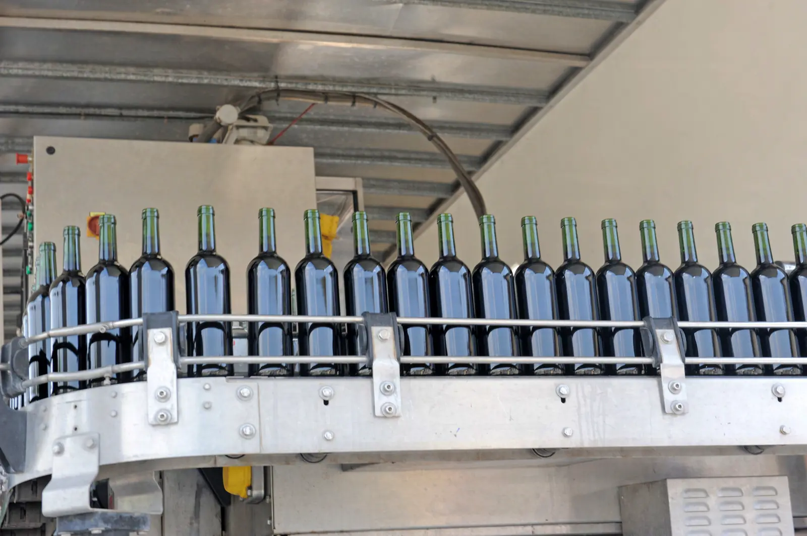
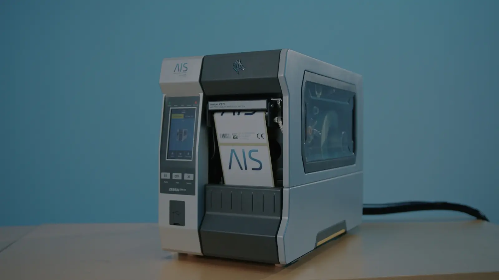
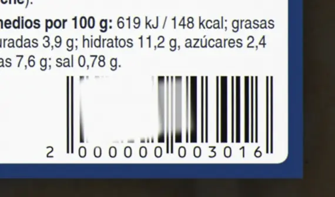
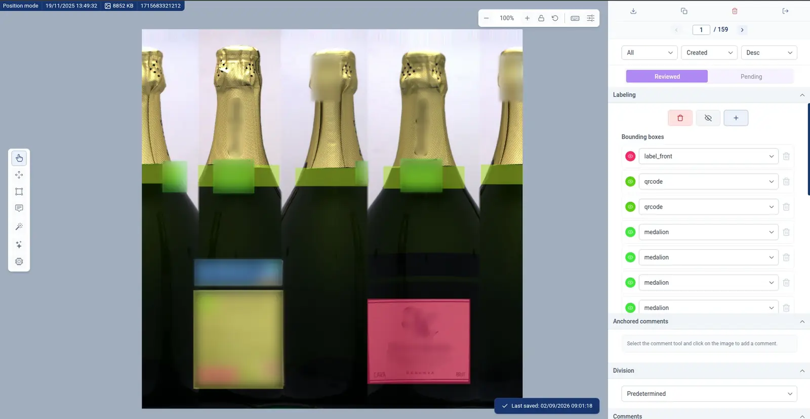
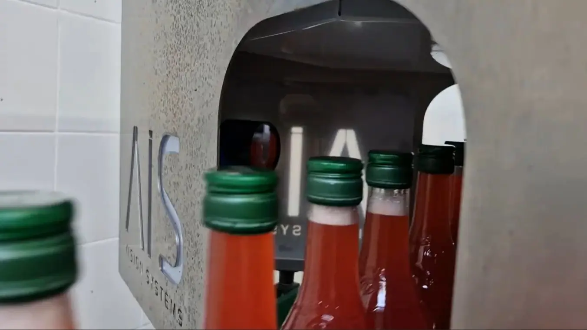
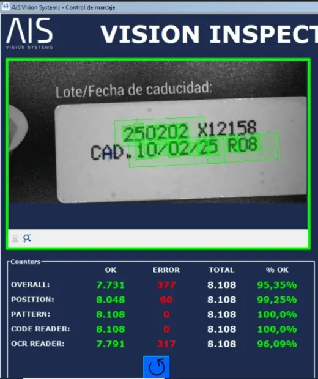
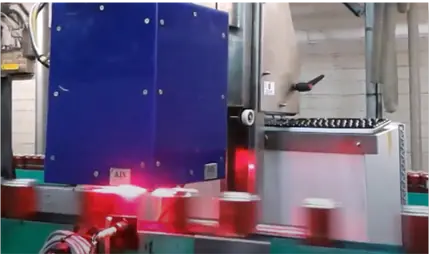

Control de calidad en líneas de bebidas
Visión artificial para revisar envases, cierres, etiquetas y marcajes.
Nuestras soluciones

Etiquetado automático

Sistemas de visión

Impresión por chorro de tinta y láser

Impresoras de etiquetas

Verificadores de códigos de barras

Lectores de códigos de barras
5

01
Control de calidad con visión artificial y plataforma de IA
Nuestros servicios
AIS Vision Systems
Equipos y soluciones llave en mano
Diseño mecánico y eléctrico
Inspección de producto
Por fuera o dentro del envase
Cuerpos extraños, falta de producto, defectos
Exceso de grasa, etiqueta, tapón, OCR, etc.
7
IA con Rosepetal
Software de aprendizaje profundo para productos sin un patrón único, que requieren crear una red neuronal.
Aprende a partir de imágenes
Un operario decide si hay un error y de qué tipo
Precisión variable según el entrenamiento

8
Sistemas de control de calidad con IA
Sistema de inspección de etiquetas a 360° con IA, para botellas de vino, cava y bebidas.

Las cuatro vistas de una botella en el AIS REV 360

Defectos de etiqueta marcados en Rosepetal
12
Sobre la cinta, junto al recorrido del producto
Cabezal
Tres cámaras en color para el control lateral del tapón; cámara cenital opcional para la boca
Iluminación
Cúpula que aísla de la luz exterior
Botellas atravesando el cabezal
Inspección en línea


15
Probamos tus muestras antes de la oferta
Muestras: envases reales de tu producción, con sus formatos y defectos
Pruebas de laboratorio: un informe técnico fija el hardware del proyecto
Oferta técnica y económica detallada

18
Inspección de tapón a 360°, de nivel y de boca
Etiqueta
Bandera y lote
Código de barras
Inclinación
Tapón
Presencia y rotura
Inclinación y puente roto
Color del tapón
Tapón solidario
Control a 360°
Nivel y boca
Nivel de líquido
Asa
Boca
19
OPTICAIS
Sistemas de control de textos (OCR): reconocimiento de textos, códigos 1D y 2D.

En la pantalla del equipo

La cámara, sobre el paso de los envases

Sobre una línea de latas
20
02
AIS Conwell: muelles de carga inteligentes
03
Compromiso con los más altos estándares de calidad
Control de calidad de artes gráficas
Arts Platform: la forma más rápida de encontrar y eliminar errores en los envases
GlobalVision C8
¿Qué te ofrecemos? Inspección de todos los envases a su llegada al almacén

27
Nuestros clientes y referencias


28

Gracias
Web
www.aisvision.com
Teléfono
+34 931 003 035
LinkedIn
AIS Vision Systems
YouTube
AIS Vision Systems